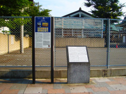
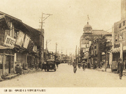
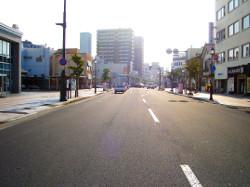

寺町通り＋太宰治下宿跡地
-「たいへん重大な時期」(太宰治「津軽」）の生活拠点-
写真をクリックすると拡大表示します。  
{kind=link}
{kind=link}
{kind=link}
青森市で過ごした4年間のことを、太宰治は「津軽」で次のように述べています（「太宰治全集第六巻」筑摩書房 1990）。
「私の生涯に於いて、たいへん重大な時期でもあったやうである」
「私にとって忘れがたい期間であったとも言へるであらう」
自己の人生の行方に思いを巡らせ、自分の道を切り拓きたかったのであろう、 その「時期」「期間」の生活拠点となったのが、寺町通りの下宿先。老舗呉服店を営んでいた親類宅でした。
寺町通りは青森駅から東へ約1㎞。青森駅前から延びる新町通りの延長上に位置します。 4つのお寺が並び、今も寺町通りと呼ばれています。 お寺のほか、老舗の店舗が軒を並べる通りですが、太宰が暮らしていた呉服店は今はなく、駐車場となっています（写真左）。
太宰治の青森市在住時は、都市としての青森市の転換期と重なります。新町が青森市一の繁華街へと変化していったことも、その１つ。
象徴は1921年、デパート「松木屋呉服店」が開店したこと。太宰治が近くで暮らし始める約1年半前です。ドーム型屋根を持つ3階建て。 日本で当時、通りの角地に建つ建物のデザインとして最先端をいくものでした。（写真中 提供：青森まちかど歴史の庵 奏海)。
ヨーロッパ風のその建物を、学生服の太宰治は間近に見て毎日、通学していたはずです。
しかし、松木屋呉服店は1945年、アメリカ軍機による空襲に備えて取り壊されました。 戦後、松木屋百貨店として別の場所に新築され、数十年営業を続けましたが、閉業。
寺町通りから見る風景もすっかり変わりました（写真右）。
青森市で暮らしつつ、太宰治は作家になる気持ちを固めていきました。 そのことに影響を与えた青森市の街の何かが、都市の変遷に埋没せず、場所の力として残っているか。 青森市への旅で感じていただければ、と思います。
散歩してはいかかでしょうか？このスポットは全ての散歩コースに組み込まれてます。「私の生涯に於いて、たいへん重大な時期でもあったやうである」
「私にとって忘れがたい期間であったとも言へるであらう」
自己の人生の行方に思いを巡らせ、自分の道を切り拓きたかったのであろう、 その「時期」「期間」の生活拠点となったのが、寺町通りの下宿先。老舗呉服店を営んでいた親類宅でした。
寺町通りは青森駅から東へ約1㎞。青森駅前から延びる新町通りの延長上に位置します。 4つのお寺が並び、今も寺町通りと呼ばれています。 お寺のほか、老舗の店舗が軒を並べる通りですが、太宰が暮らしていた呉服店は今はなく、駐車場となっています（写真左）。
太宰治の青森市在住時は、都市としての青森市の転換期と重なります。新町が青森市一の繁華街へと変化していったことも、その１つ。
象徴は1921年、デパート「松木屋呉服店」が開店したこと。太宰治が近くで暮らし始める約1年半前です。ドーム型屋根を持つ3階建て。 日本で当時、通りの角地に建つ建物のデザインとして最先端をいくものでした。（写真中 提供：青森まちかど歴史の庵 奏海)。
ヨーロッパ風のその建物を、学生服の太宰治は間近に見て毎日、通学していたはずです。
しかし、松木屋呉服店は1945年、アメリカ軍機による空襲に備えて取り壊されました。 戦後、松木屋百貨店として別の場所に新築され、数十年営業を続けましたが、閉業。
寺町通りから見る風景もすっかり変わりました（写真右）。
青森市で暮らしつつ、太宰治は作家になる気持ちを固めていきました。 そのことに影響を与えた青森市の街の何かが、都市の変遷に埋没せず、場所の力として残っているか。 青森市への旅で感じていただければ、と思います。